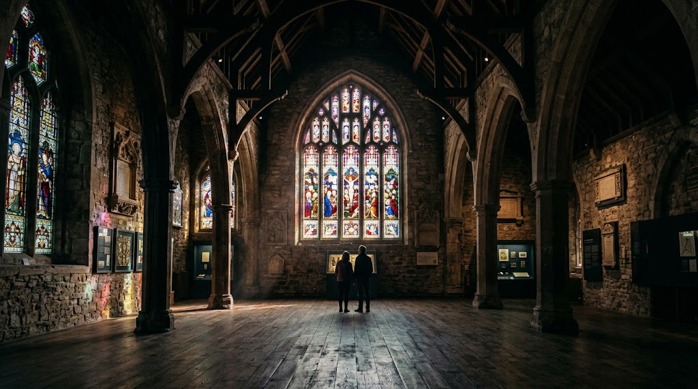
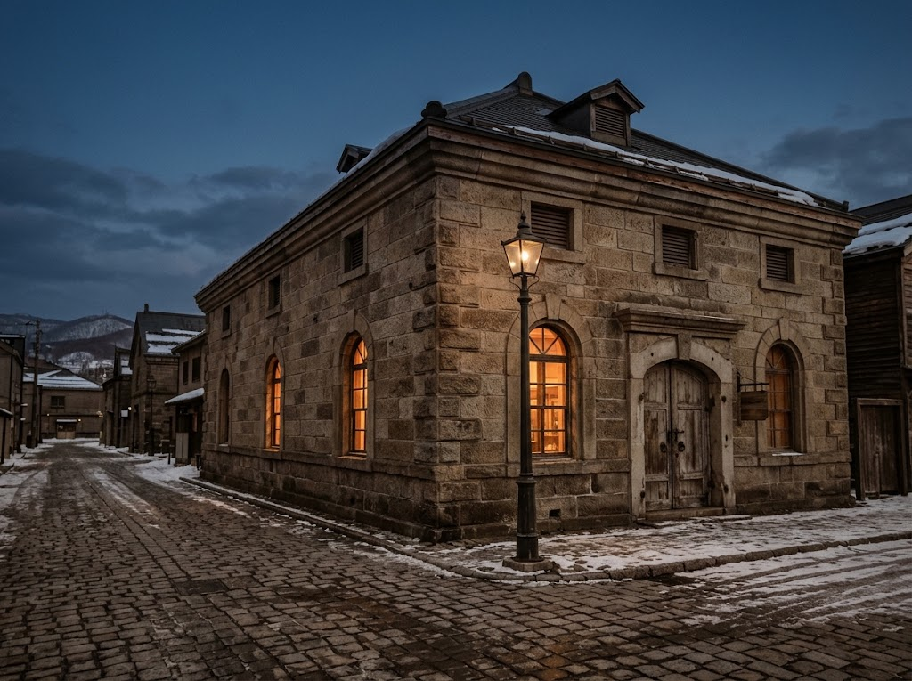
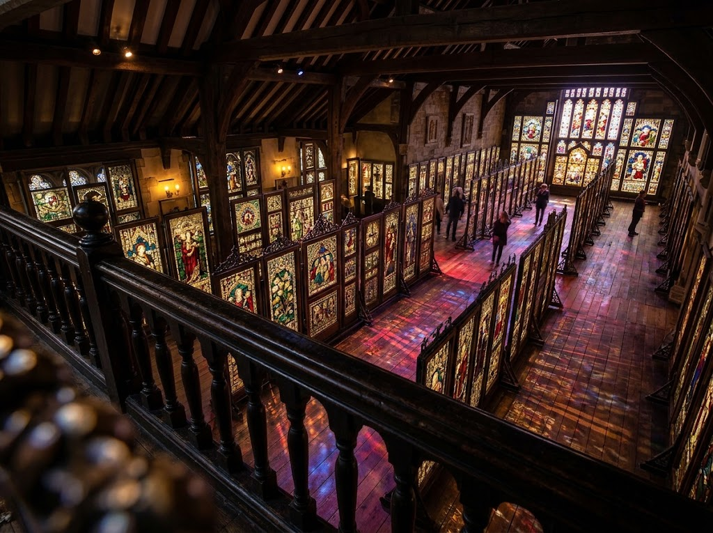

約140点の展示
英国の教会ステンドグラスを中心に、約140点を展示。倉庫建築を活かした広い空間いっぱいに、色鮮やかな光が広がります。

1923年に建てられた旧高橋倉庫は、もともと穀物を納めるための倉庫でした。小樽の港町とともに歩んだ歴史ある建物が、いまは19世紀後半から20世紀初頭にかけて英国で制作された、教会のステンドグラスを展示する美術館になっています。
かつて実際に教会の窓を飾っていた本物の作品が、保存状態よく並びます。静かな空間の中で浮かび上がる色と陰影が、当時の信仰と英国工芸の技を伝えてくれます。

英国の教会ステンドグラスを中心に、約140点を展示。倉庫建築を活かした広い空間いっぱいに、色鮮やかな光が広がります。
絵画とは違い、光と闇の陰影によって浮かび上がる色彩。肉眼で見てこそ伝わる迫力があります。

とても綺麗で美しかったです。絵画と違って、ステンドグラスは光と闇の陰影によって浮き上がってダイナミックに伝えてる感じがあり、その表現力に圧巻しました。ヨーロッパの芸術はキリスト教を題材にしていることが多く、ここの展示物も約8割近くがキリスト教関係だったと思いました。個人的には俗世界のものや、星座の物語、童話などもたくさん見てみたかったです。
ご来館者の口コミ今回の旅で一番行ってみたい所でした。評判が良いので入館してみたら、写真で見るより凄く良い。こんなに大きな物が全てステンドグラスで作られているなんて感動モノでした。2階からの眺め、角から斜め対角に眺める景色と、肉眼でないと感じられない良さがありました。機会があれば是非どうぞ。
ご来館者の口コミ| 施設名 | 小樽芸術村 ステンドグラス美術館 |
|---|---|
| 住所 | 北海道小樽市色内1丁目3-1 |
| 電話 | 0134-31-1033 |
| 定休日 | 5〜10月：毎月第4水曜日 11〜4月：毎週水曜日（祝日の場合はその翌日）、年末年始 |
| メール | nitoribzd@nitori.jp |
| 公式サイト | nitorihd.co.jp/otaru-art-base |